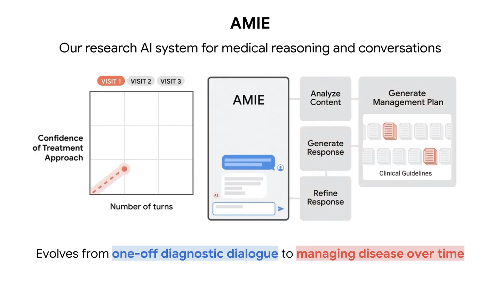
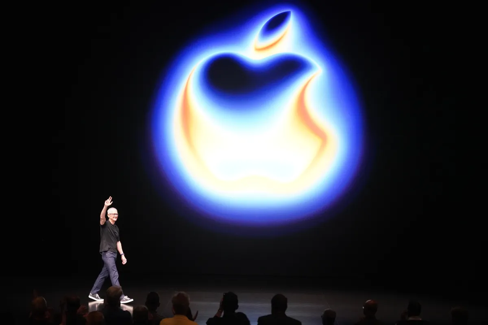
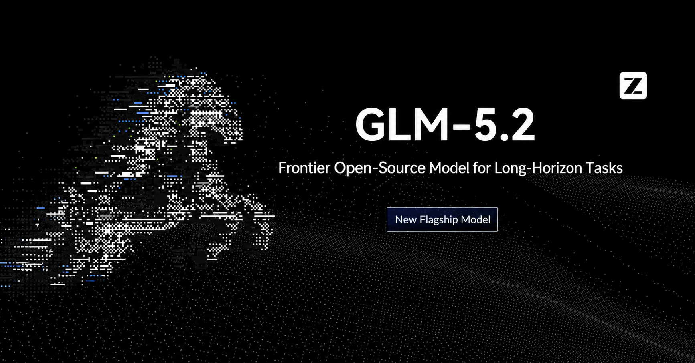
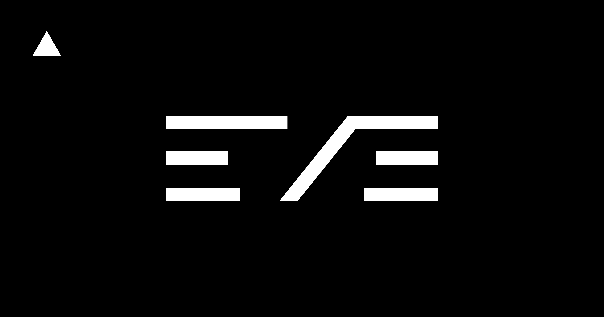
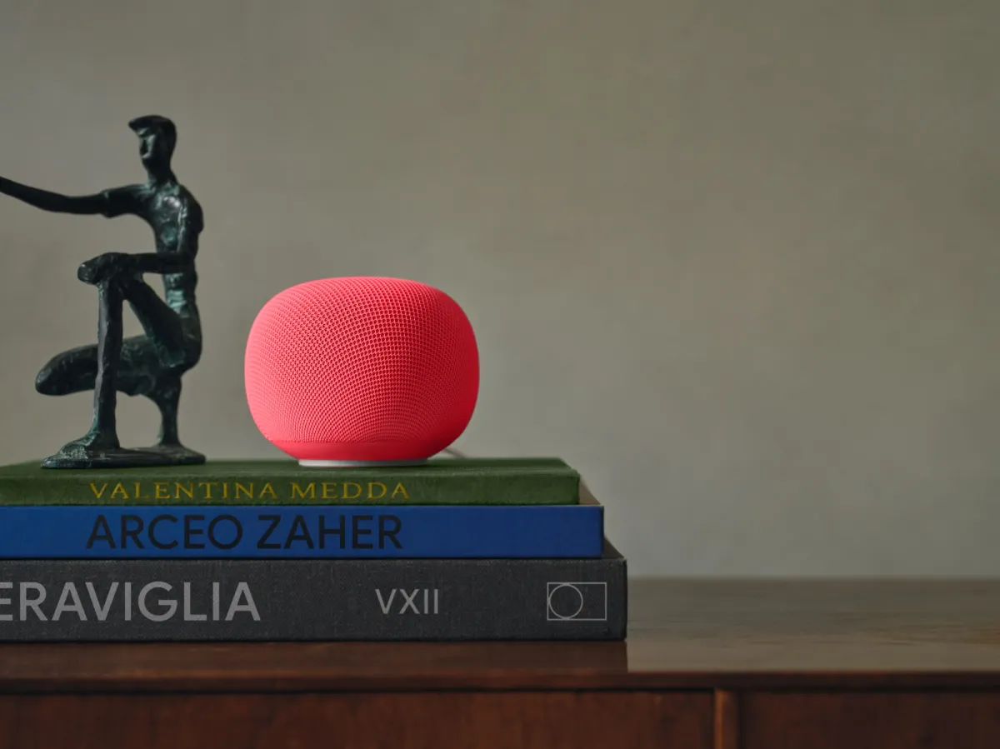
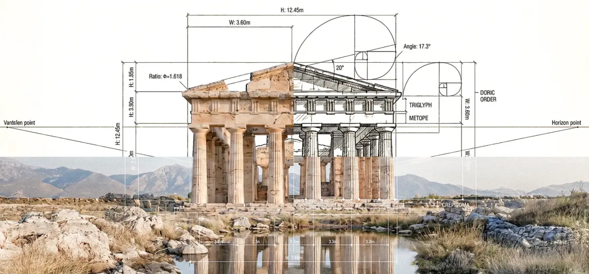
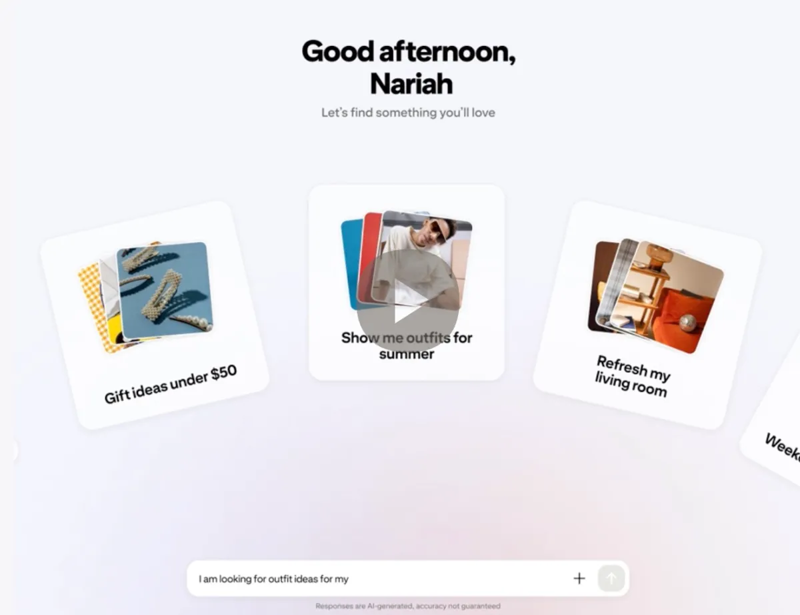

Janet 快车箱
AI Daily Briefing
2026-06-18
VOL 261

对中国创作者和企业，含义很简单：模型只是前台，后面还有数据、权限、硬件、渠道和信任。内容团队要做多模型备份；工具创业者要把可调用动作做成产品核心；老板们别只盯订阅费，要把内存、云、数据驻留和人工兜底一起算进去。
接下来 2-4 周盯三处：美国会不会把 frontier model 访问限制写成更稳定的制度，移动 OS 和家用设备会不会继续开放或收紧 agent 工具调用，印度、韩国这类本地市场是否继续用机房和大客户把模型公司锁进地区账本。

AP 于 2026 年 6 月 17 日报道，OpenAI CEO Sam Altman、Google DeepMind CEO Demis Hassabis、Anthropic CEO Dario Amodei，以及 Cohere、Mistral、Black Forest Labs、Domyn、Sakana AI、Synthesia 等公司负责人，在法国 G7 峰会参加 AI 工作午餐。法国总统 Emmanuel Macron 借 Anthropic Fable 5 和 Mythos 5 访问受限一事提醒盟友：如果关键模型能被单一国家切断，AI 主权就不是口号。

OpenAI 于 2026 年 6 月 17 日发布实验结果：GPT-5.4 驱动的 AI chemist 与 Molecule.one 研究员 Maria 合作，围绕 Chan-Lam coupling 反应提出假设、设计实验并迭代条件。OpenAI 称，该系统让平均反应产率从 16.6% 提升到 25.2%，产率超过 30% 的反应比例从 15.6% 提升到 37.5%，14 组 bench-scale 对照里有 11 组改善；项目周期约 3 个月，仍需要人类研究员参与。

Google Research 于 2026 年 6 月 17 日介绍 Nature 论文，称 AMIE 从诊断对话扩展到 disease management。研究把 Gemini 长上下文能力用于复杂慢病场景，评估显示 AMIE 在管理推理上达到临床医生水平，并在方案精确度和指南一致性上更高；Google 也强调，下一步仍需要真实世界研究。
Anthropic 于 2026 年 6 月 17 日宣布首尔办公室开业，并披露韩国客户进展。NAVER 已在整个工程组织使用 Claude Code，Nexon 用 Claude Code 写、审和发布游戏代码；LG CNS、Hanwha Solutions、Samsung SDS 和 Channel Corp 也在员工、集团业务、客服或销售分析场景部署 Claude。

TechCrunch 于 2026 年 6 月 17 日报道，AI 服务器需求正在挤压内存芯片供应，可能迫使 Apple 提高 iPhone、Mac 和 iPad 价格。报道援引 Tim Cook 的警告称，内存芯片价格已经较去年上涨约 4 倍，这种成本压力不可持续。

Z.ai 于 2026 年 6 月 17 日在 Hugging Face 发布 GLM-5.2 说明，主打 100 万 token 上下文、coding 和 long-horizon tasks。官方称 IndexShare 机制可带来 2.9 倍 FLOPs 降低，并以 MIT license 开放权重；模型已在 Hugging Face、ModelScope 上线，并支持 vLLM、SGLang、xLLM 和 ktransformers 等部署路径。

TechCrunch 于 2026 年 6 月 16 日 11:00 AM PDT 报道，Google 发布 Android 17、Wear OS 7 和 Pixel Drop，并继续扩展 Gemini 功能。新版本带来 bubble bar、多任务工具、视频中的 screen reaction、儿童与安全功能、foldable gaming 改进，以及 Lyria 3、Gemini Omni、AudioLM 等 AI 相关更新。

Vercel 于 2026 年 6 月 17 日推出开源 agent framework eve，用于构建、运行和扩展生产级 agents。eve 内置 durable execution、sandboxed compute、human-in-the-loop approvals、subagents 和 evals，并提出 agent directory，让 agents 像可组合服务一样被组织和调用。

TechCrunch 于 2026 年 6 月 17 日报道，Google 推出 99.99 美元的 Google Home Speaker，押注 Gemini 重做智能家居音箱。产品支持更自然的语言控制、用户中途修正指令、10 种声音，并可与每月 10 美元的 Google Home Premium 搭配使用；Google 称设备将在本月晚些时候发货。

TechCrunch 于 2026 年 6 月 17 日报道，机器人训练数据公司 XDOF 从 Thrive Capital、Spark Capital、a16z、Lux、WndrCo 等投资方获得 7000 万美元融资，并从 stealth 状态公开。公司称已有约 60 名员工和 20 个客户，包括若干 frontier AI labs；它还与 UC Berkeley AI Research Lab 发布 ABC 数据集，包含 13 万条机器人操作轨迹、300 小时仿真和 100 小时评测。

TechCrunch 于 2026 年 6 月 17 日报道，Pramaana Labs 获得 Khosla Ventures 领投的 2700 万美元 seed round，目标是把 formal verification 用到 AI。公司关注法律、药物发现、税务等高风险领域，希望用类似 LEAN 的方法，让 AI 输出不只像答案，而是能被形式化检查。

TechCrunch 于 2026 年 6 月 17 日报道，Anthropic 成为首家加入 Frontier carbon removal coalition 的 AI startup。Frontier 新一轮买方资金为 9.15 亿美元，总承诺已达 18 亿美元，已签约超过 7 亿美元、50 多个项目和约 180 万吨碳移除；Anthropic 这是第一笔气候相关交易。
TechCrunch 于 2026 年 6 月 17 日报道，Uber 计划在 2027 年把 premium robotaxi 服务带到休斯顿。该服务与 Nuro、Lucid 相关，Uber 已向 Nuro 投资约 5 亿美元，并承诺向 Lucid 投资 5 亿美元，同时购买至少 3.5 万辆 robotaxi-ready Lucid 车辆。
TechCrunch 于 2026 年 6 月 17 日报道，world model 公司 Odyssey 完成 3.1 亿美元 Series B，估值达到 14.5 亿美元，投资方包括 Amazon、AMD 和 GV。公司由 Oliver Cameron 与 Jeff Hawke 创立，目标是把 world models 用于视频游戏创作、机器人等场景；AWS 将成为首选云，Odyssey 也计划使用 Trainium。
TechCrunch 于 2026 年 6 月 17 日报道，加拿大养老金投资机构 CPP Investments 承诺向印度数据中心运营商 CtrlS 投入最多 700 亿卢比，约 7.41 亿美元。其中 400 亿卢比用于收购 CtrlS 8.2% 股权，另有最多 300 亿卢比投入 hyperscale data center 园区合资公司，CPP 将持有合资公司 48% 股权。
TechCrunch 于 2026 年 6 月 17 日报道，Pew Research Center 新研究显示，只有 16% 的美国人认为 AI 会对社会产生正面影响，40% 认为会产生负面影响；67% 不相信政府能监管好 AI，59% 不信任公司能负责任地开发 AI。与此同时，44% 的美国成年人已经使用过 ChatGPT。

TechCrunch 于 2026 年 6 月 17 日报道，Pinterest 推出实验性 AI shopping app Ask Pinterest。产品基于 Pinterest 的 Taste Graph，试图把用户的灵感板、商品意图和对话式推荐放到同一个购物入口；Pinterest 同时在广告侧推出 Ads Manager AI assistant、Performance+ creative 和面向广告主的 MCP。